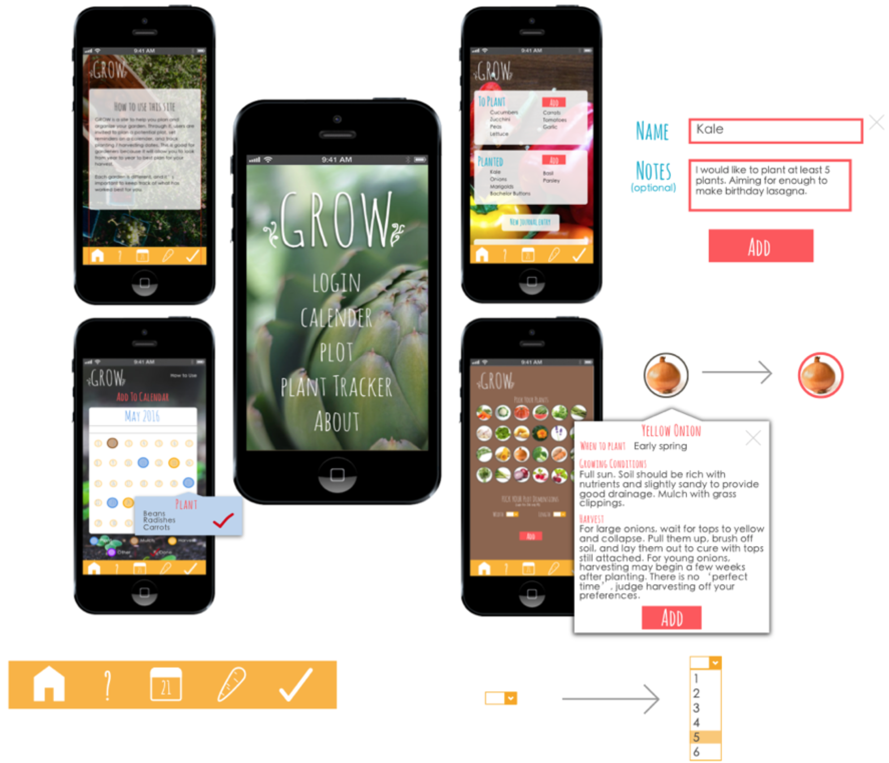

Preparation
Grow was inspired by the lack I found when perusing garden apps for a useful and easy-to-use plot-planning feature. I wanted something that had a journal feature to keep notes on how my garden was doing: what I could improve on, planting/harvesting dates, and what was to be grown that year. I wanted to create an app that incorporated all these features and could flow between them easily and sensibly.
When researching gardening apps, most of the ones I found implemented one or two of these desired features; I had a hard time finding one meeting all of my needs. The timeline for this project was collectively about a week and a half.
The feature I focused most on, or what I thought would be the main draw of the app was the idea of having a virtual plot for gardeners to use as a way to plan out plant placement. People would be able to pick from a wide array of commonly grown plants, set their dimensions, and then use the plants they selected to populate a grid. This became my main focus and what the rest of the app was somewhat constructed around.
To prepare, I began by looking at other gardening apps with similar features. I noted their color palettes and choice of features. I also searched images of backyard gardens, creating a palette from the colors I saw most frequently. I myself as an aspiring gardener, was drawn to colors that represent flowers, dirt, bugs, and of course greens in all ranges.
Ideation
I scoured the site, Pexels, for images that I felt represented feelings of gardening, growth, playfulness, and an understanding of the accomplishment of being one with nature in your own backyard. I put together moodboards of the images that most coincided with these ideology.
I proceded to find fonts that exemplified these same feelings, as well as worked well together. Amatic SC has been a favorite for a long time, and I was excited to have a project where it could be applied. It portrays the sense of overgrowth that I was looking for for this project. It is contrasted nicely by the Heiti SC, which also has a sense of playfulness due to its rounded nature, but provides more structure.
The colors were drawn from the images, as well as from my own garden.
Images
Fonts
Colors
Final Product
The final product came together to be a culmination of all the aspects mentioned above. I was able to incorporate all the pages I intended, with sensible and modern flow between them. Each page contains functionality and easliy leads users through it Calls to Actions.
The pages with the most functionality are the calendar, the plant tracker, and the plot:
This page allows users to set reminders for certain garden-specific events. Ideally it would sync with an API that would alert for planting dates in your area.
This page allows users to organize their garden based on what they have and have yet to plant. It also lets users keep a journal to track notes pertaining to their current garden’s dreams and goals.
Here is the plot page. Users select the plants they want from a wide array, set the width and height of their plot. They ate then directed to a plot set with these parameters that they can then populate as they wish.
Each page uses the same Call To Action color (Pastel Red) and incorporates the Marigold color for its navbar. These aspects help tie the pages together, giving the site an overall cohesive look.
The navbar exhibits the icons for the different pages, placed in what seems like a natural progression through the site. Aside from the navbar, the main element that can be found throughout the site is the ‘add’ button.

Overall, this site met all the expectations that I required at the beginning. Each page has some sort of functionality. The three main pages outlined above take users through multiple functions.